Tiny
orange star
awaiting identification
updated
Jul 2020
Where
seen? This
tiny sea star is sometimes seen on our Southern shores on rubbly areas near living reefs.
Features: Diameter about 2cm. Usually 5 arms, slender, equal in length. Upperside orange. Underside pale without markings. |
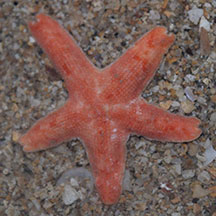
Pulau Tekukor, Sep 18
Photo
shared by Dayna Cheak on facebook. |
|
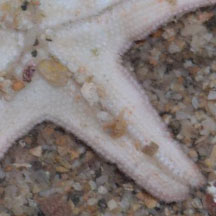 |
| Tiny orange stars on Singapore shores |
| Other sightings on Singapore shores |
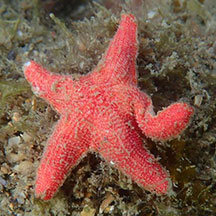
Sentosa Serapong, Apr 19
Photo shared by Abel Yeo on facebook. |
|
|
\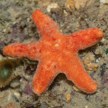
Small Sisters Island, Jul 23\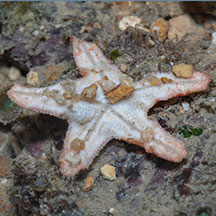
Photo
shared by Marcus Ng on facebook.
|
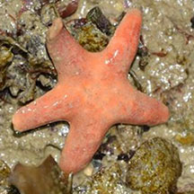
Kusu Island, Jul 20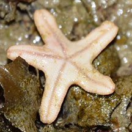
Photo
shared by Dayna Cheah on facebook.
|
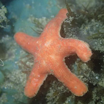
Kusu Island, Sep 19
Photo
shared by Jesselyn Chua on facebook. |
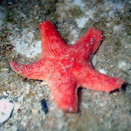
Big Sisters Island, Jan 20
Photo shared by Jianlin Liu on facebook. |
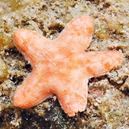 Sister Island, May 14
Photo shared by Loh Kok Sheng on flickr. |
|
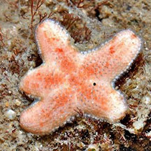 Terumbu Semakau, May 13
Photo shared by Loh Kok Sheng on flickr. |
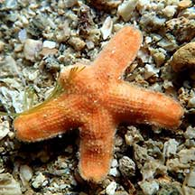 Terumbu Semakau, Apr 21
Photo shared by Jialin Liu on facebook. |
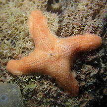 Pulau Hantu, Apr 25
Photo shared by Jianlin Liu on facebook. |
|
|